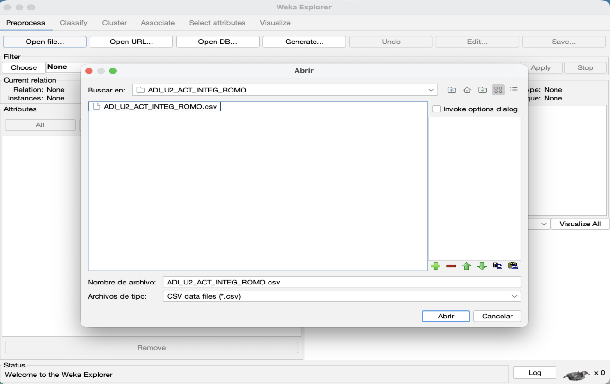

Capturas del Análisis

Carga y visualización del conjunto de datos en WEKA.

Resultados obtenidos utilizando el algoritmo J48.

Agrupamiento de datos mediante el algoritmo K-Means.
El presente proyecto tiene como objetivo aplicar técnicas de minería de datos utilizando herramientas de análisis para identificar patrones dentro de un conjunto de datos relacionado con sensores industriales y monitoreo de tanques.
Para el desarrollo del proyecto se utilizaron herramientas como WEKA, GitHub Pages, HTML, CSS y JavaScript. Además, se implementaron técnicas de clasificación y agrupamiento mediante los algoritmos J48 y K-Means.
La sociedad de la información se caracteriza por el uso intensivo de tecnologías digitales para generar, almacenar y compartir información.
La sociedad del conocimiento transforma la información en aprendizaje útil para la toma de decisiones y generación de innovación.
La inteligencia de negocios permite analizar información empresarial para apoyar procesos estratégicos y operativos.
OLAP permite realizar análisis multidimensional de datos facilitando consultas complejas y generación de reportes.
La minería de datos busca descubrir patrones, tendencias y relaciones ocultas dentro de grandes volúmenes de información.
La vista minable es un conjunto de datos preparado específicamente para aplicar algoritmos de minería de datos.
Se seleccionaron datos relevantes del sistema de monitoreo de sensores.
Se verificó la consistencia y calidad de los datos eliminando errores.
Los datos fueron convertidos a formato CSV para su análisis en WEKA.
Se aplicaron algoritmos de clasificación y clustering.
Los resultados fueron analizados para identificar patrones y tendencias.
| Tarea | Técnica | Algoritmo Utilizado |
|---|---|---|
| Clasificación | Árboles de decisión | J48 |
| Agrupamiento | Clustering | K-Means |
| Asociación | Reglas de asociación | Apriori |
Las herramientas ETL permiten realizar procesos de extracción, transformación y carga de datos.
Es un almacén centralizado de datos utilizado para análisis empresarial.
Es una subdivisión especializada de un Data Warehouse.
Permite el análisis multidimensional mediante cubos de información.
Para el análisis de datos se utilizó el archivo: ADI_U2_ACT_INTEG_ROMO.csv, el cual contiene información relacionada con sensores industriales.

Carga y visualización del conjunto de datos en WEKA.
Resultados obtenidos utilizando el algoritmo J48.
Agrupamiento de datos mediante el algoritmo K-Means.
El proyecto permitió aplicar técnicas de minería de datos para identificar patrones dentro de un conjunto de datos industriales.
El algoritmo J48 logró una precisión del 86.66%, clasificando correctamente 13 de las 15 instancias analizadas.
Por otra parte, K-Means permitió agrupar registros similares, facilitando la interpretación de comportamientos dentro del sistema.
Los resultados obtenidos demuestran la utilidad de las técnicas de minería de datos para apoyar procesos de análisis y toma de decisiones.